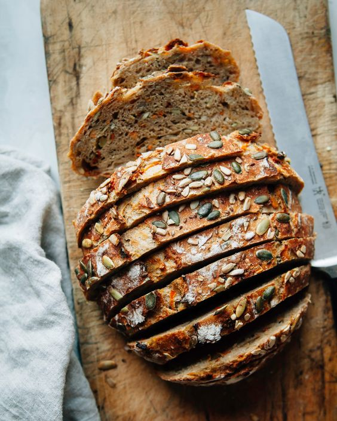
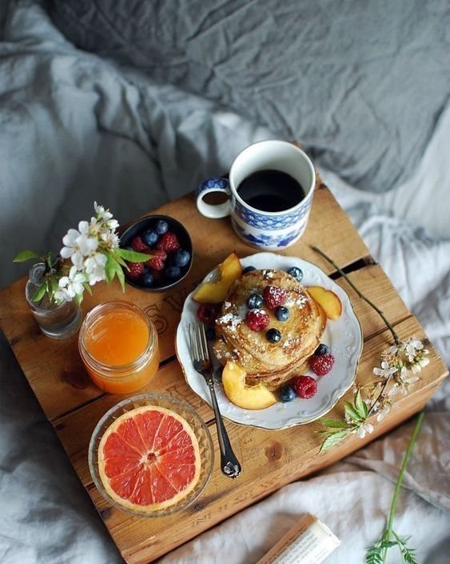

Vegetarisches Frühstück:
- frischer Saft
- Kaffee / Kakao / Tee
- Sekt
-----
- hausgemachte Marmeldade, Nussmus, Butter, verschiedene herzhafte Aufstriche
- Pfannkuchen, Croissant, verschiedene Brötchen, Körnerbrot
- gekochte Eier / Rührei / Spiegelei
- kleine Käseauswahl
- große Auswahl an Obst und Rohkost
- hausgemachtes Müsli und Joguhrt/ Milch
Veganes Frühstück:
- frischer Saft
- Kaffee / Kakao / Tee
- Sekt
-----
- hausgemachte Marmeldade, Nussmus, Butter, verschiedene herzhafte Aufstriche
- Pfannkuchen, Croissant, verschiedene Brötchen, Körnerbrot
- große Auswahl an Obst und Rohkost
- hausgemachtes Müsli und Joguhrt/ Milch (pflanzl.)
weitere Infos:
- Unsere Eier & Milch kommen alle vom Bauer Lieblich aus Otterndorf.
- Natürlich haben wir auch einige pflanzliche Alternativen.
- Jegliche Backwaren stammen aus dem gegnüber liegenden Bäcker. Auf Wunsch haben wir auch einige glutenfreie Alternativen.
- Wir achten auf vorallem auf saisonale und wenn möglich auch regional Lebensmittel.
- Unser Obst und Gemüse kommt ebenfalls zu großen Teilen von Bauer Lieblich.
- Wir bereiten täglich das Frühstück frisch zu.
- Da wir eine offene Küche haben gibt es den ganzen Tag über jegliche Getränke, Obst und andere Snacks, sowie die Reste vom Frühstück.
- Das Frühstück kann je nach belieben in den gemeinschaftlichen Wohnräumen, draußen auf der großen Terasse (Buffet) oder auch auf dem Zimmer (Tablett) verzehrt werden.
- Alles aufgelistete ist im Gesamtpreis mit in begriffen.